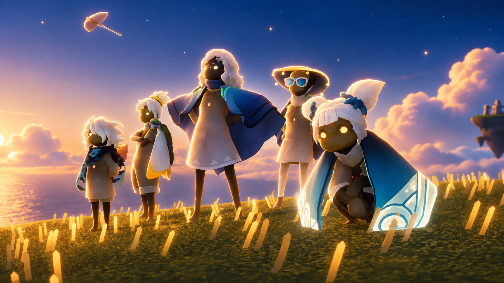

Este site, que equivale ao o 2º projeto de Desenvolvimento de Aplicações Web 1 - COTIL 2026, mostra a seguir uma introdução ao jogo Sky: Filhos da Luz lançado em 2019 pela ThatGameCompany.
Esta página inclui: alguns conceitos e Elementos do Jogo; o núcleo da Sociabilidade e a Recepção da crítica ao lançamento.
Você pode ainda encontrar links para o Download do jogo e, se estiver interessado, conhecer mais da História do jogo acessando o nosso Seletor de Reinos.
Elementos Do Jogo
Espíritos
Ancestrais caídos aguardam seu resgate. Siga suas memórias e aprenda expressões únicas. Espíritos viajantes retornam periodicamente trazendo itens raros.
Luzes Aladas
Existem crianças de luz espalhadas pelos reinos. Colete-as para fortalecer sua capa e voar cada vez mais alto.
Velas e Corações
A luz é a moeda deste universo. Forje velas coletando cera e presenteie seus amigos para obter Corações.
Cosméticos
Expresse sua identidade. Misture capas, máscaras e instrumentos musicais para criar um avatar único.
Temporadas
O mundo está sempre em expansão. Ciclos sazonais trazem áreas inéditas e narrativas dramáticas.
Eventos
Celebrações temporárias vão mudar o mapa de todo o reino com minigames e decorações temáticas.
A Sociabilidade

O coração de Sky é a comunidade; sem ela nada seria possível. Dentro do jogo, a comunicação começa anônima apenas com o som do seu chamado. Com velas ela evolui, possibilitando animações, danças e chat entre os jogadores; amizades podem surgir em qualquer hora e em qualquer lugar do reino. A beleza de Sky está em descobrir que a verdadeira magia são as pessoas que te acompanham na sua jornada.
Reinos
Conheça um pouco da história do jogo acessando os reinos abaixo. Vale advertir que os artigos podem conter spoilers.
Ilha do Alvorecer
Liberte os espíritos perdidos e siga o sino para o templo
Campina da Aurora
Toque os sinos das torres e revele o caminho
Floresta Oculta
Proteja a sua luz e encontre a fonte do Poder Antigo
Vale do Triunfo
Corra montanha abaixo e os portões da cidade se abrirão para honrá-lo
Sertão Dourado
Para além do sertão desértico, há o Relicário do Conhecimento
Relicário do Conhecimento
Escale o Relicário, sua sabedoria te espera
Éden
Invada a escuridão
Trailer e Recepção
Dos mesmos criadores de Journey e Flower. A ThatGameCompany ta experiências focadas na empatia e na emoção humana. Sky segue unindo milhões até os dias de hoje, sendo muito bem avaliado pelo público e pela crítica.
"Sky: Filhos da Luz é uma sequência deslumbrante para Journey, entregando uma experiência visual impressionante e um multiplayer alegre e memorável."- David Jagneaux, IGN
85 / 100
"O título aprimora os aspectos sociais com mecânicas inovadoras em uma comunidade pura e focada em combater a solidão."- Chris White, GodIsAGeek
82 / 100
"Misturando elementos de endless runner, MMO e quebra-cabeças, a proposta atinge patamares sublimes e poéticos."- Gamezebo, Metacritic
100 / 100
Comece sua Jornada
Sky é totalmente cross-save e cross-play; comece no celular, continue no console e nunca perca contato com seus amigos.